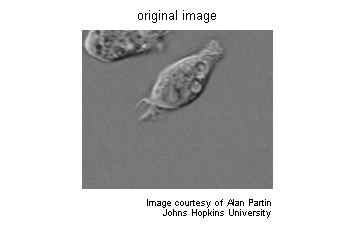
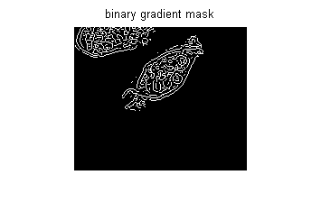
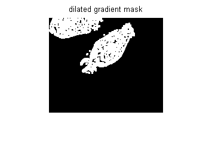
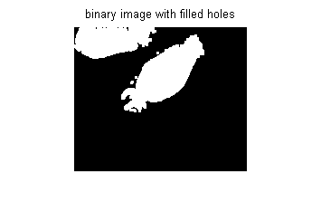
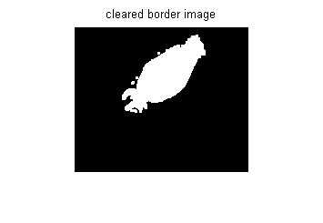
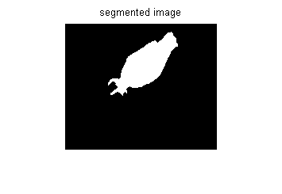
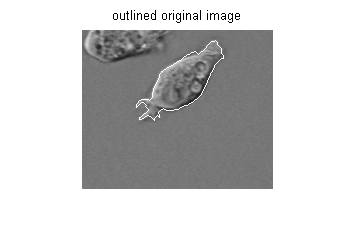

イメージの区分化を使用したセルの検出
オブジェクトは、背景と十分なコントラストがある場合、イメージ内で簡単に検出されます。エッジ検出と基本的な形態学的ツールを使用して、前立腺癌細胞を検出します。
目次
手順 1: イメージの読み込み
cell.tif イメージを読み込みます。これは前立腺癌細胞のイメージです。
I = imread('cell.tif'); figure, imshow(I), title('original image'); text(size(I,2),size(I,1)+15, ... 'Image courtesy of Alan Partin', ... 'FontSize',7,'HorizontalAlignment','right'); text(size(I,2),size(I,1)+25, .... 'Johns Hopkins University', ... 'FontSize',7,'HorizontalAlignment','right');
手順 2: セル全体の検出
このイメージには 2 つの細胞がありますが、全体が見えるのは 1 つの細胞だけです。この細胞を検出します。オブジェクトの検出は区分化とも言い換えられます。区分化するオブジェクトは、コントラストが背景のイメージと大きく異なります。コントラストの変化は、画像勾配を計算する演算子によって検出できます。画像勾配を計算し、しきい値を適用して、区分化された細胞を含んでいるバイナリ マスクを作成できます。最初に、edge と Sobel 演算子を使用してしきい値を計算します。次にしきい値を調整し再度 edge を使用して、区分化された細胞を含んでいるバイナリ マスクを作成します。
[junk threshold] = edge(I, 'sobel'); fudgeFactor = .5; BWs = edge(I,'sobel', threshold * fudgeFactor); figure, imshow(BWs), title('binary gradient mask');
手順 3: イメージの膨張
バイナリの勾配マスクでは、イメージに高いコントラストの線が示されます。これらの線は、対象オブジェクトの輪郭を正確には表しません。元のイメージと比べて、勾配マスクのオブジェクトの周囲の線にはギャップがあります。これらの線のギャップは、線形構造化要素 （関数 strel で作成できる） を使用して Sobel イメージを膨張させると見えなくなります。
se90 = strel('line', 3, 90); se0 = strel('line', 3, 0);
バイナリの勾配マスクは、縦方向の構造化要素を使用し、次に横方向の構造化要素を使用して膨張します。関数 imdilate はイメージを膨張させます。
BWsdil = imdilate(BWs, [se90 se0]);
figure, imshow(BWsdil), title('dilated gradient mask');
 手順 4: 内部のギャップを埋める
膨張した勾配マスクでは細胞の輪郭がよく見えますが、細胞の内部にはまだホールがあります。これらのホールを塗り潰すために、関数 imfill を使用します。
BWdfill = imfill(BWsdil, 'holes'); figure, imshow(BWdfill); title('binary image with filled holes');
手順 5: 境界につながるオブジェクトの削除
対象細胞は適切に区分化されましたが、検出されたのはこのオブジェクトのみではありません。イメージの境界につながるオブジェクトは、関数 imclearborder を使用して削除できます。関数 imclearborder の接続を 4 に設定して斜め方向のつながりを削除します。
BWnobord = imclearborder(BWdfill, 4);
figure, imshow(BWnobord), title('cleared border image');
 手順 6: オブジェクトの平滑化
最後に、区分化されたオブジェクトが自然に見えるようにするために、ダイヤモンド構造化要素でイメージを 2 回縮退してオブジェクトを平滑にします。ダイヤモンド構造化要素は関数 strel を使用して作成します。
seD = strel('diamond',1); BWfinal = imerode(BWnobord,seD); BWfinal = imerode(BWfinal,seD); figure, imshow(BWfinal), title('segmented image');
区分化したオブジェクトを表示する別の方法は、区分化された細胞の周りに輪郭を描くことです。輪郭は関数 bwperim によって作成されます。
BWoutline = bwperim(BWfinal);
Segout = I;
Segout(BWoutline) = 255;
figure, imshow(Segout), title('outlined original image');
